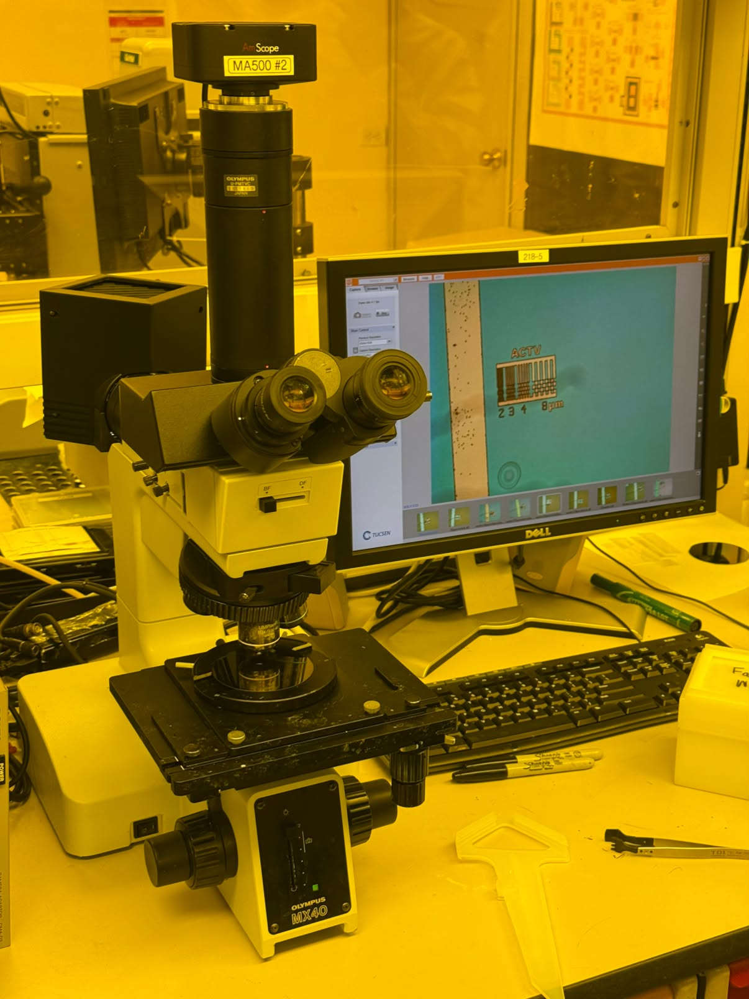
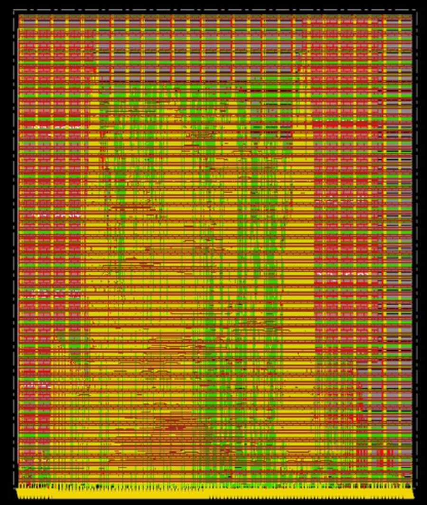
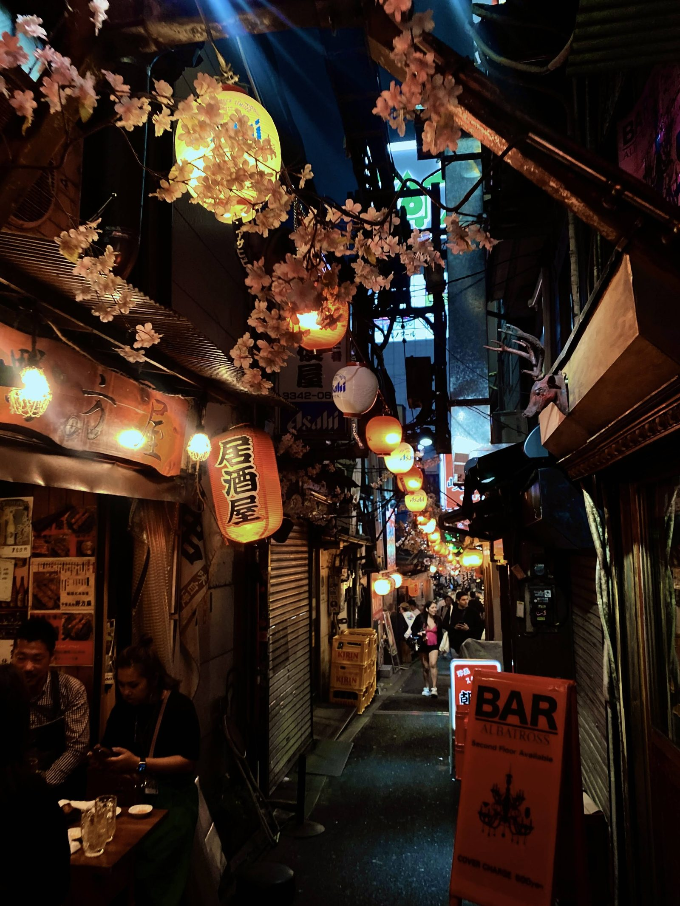
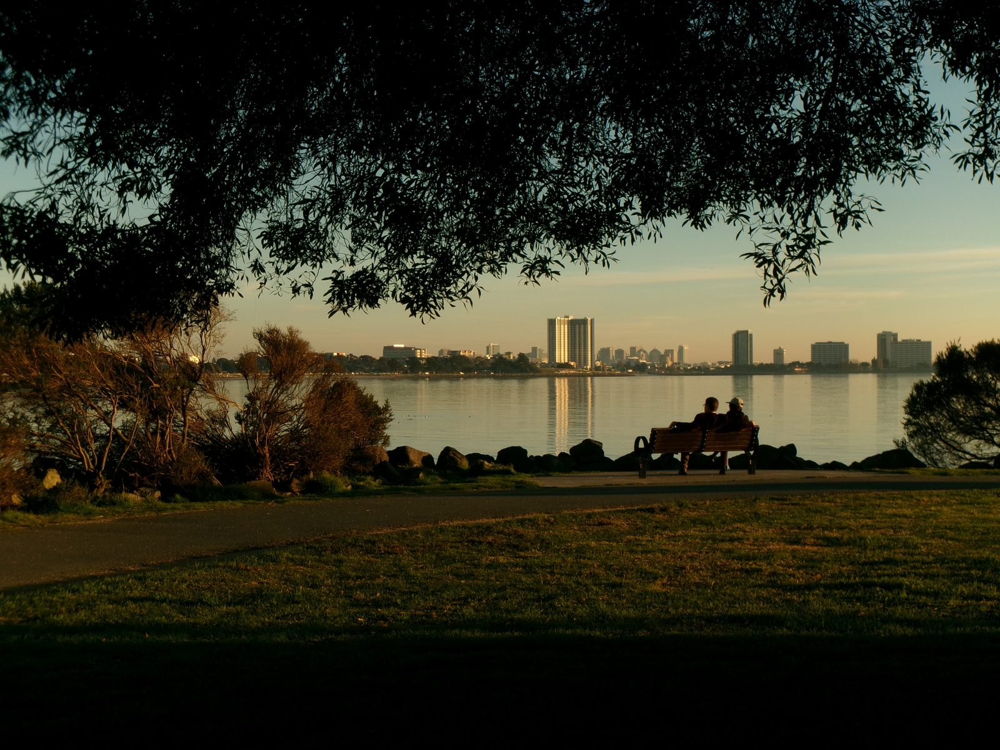
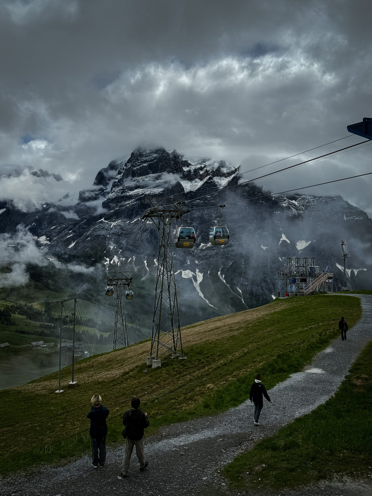
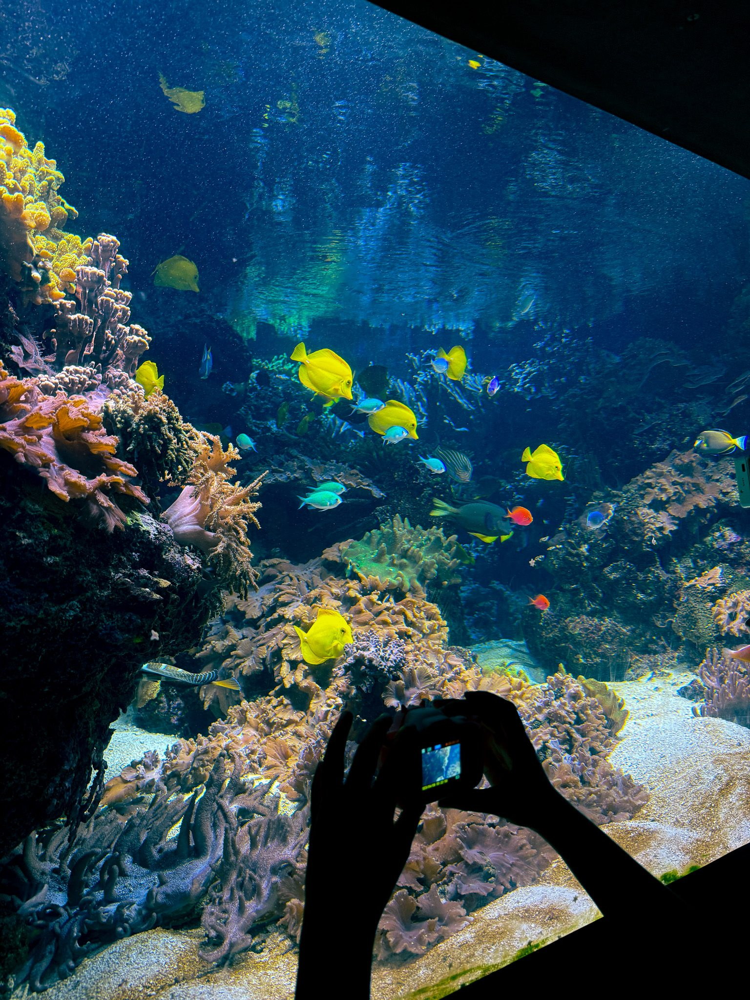

EECS · UC Berkeley
Hi, I'm Isa.
I'm an Electrical Engineering and Computer Science student at UC Berkeley, graduating in May 2028. I love chips, from how they're fabricated to how they're designed, and I'm currently doing research in nanofabrication.
I've interned at KLA and EUV Tech, but I'm drawn to hard hardware problems in any industry. I've built control systems for climate tech, sensing hardware for automotive, and an ASIC from RTL to layout, and I'm still exploring where I want to focus.
Experience
Where I've worked
Jun—Aug 2026OrCAD XLTspiceI²CPMBusKLAElectrical Design Engineering InternInternship
- Designed a 600+ W DC-DC converter evaluation PCB in OrCAD with configurable I²C and PMBus interfaces to test and characterize converters for broadband plasma (BBP) wafer-inspection camera power systems.
- Designed interchangeable 30+ A π-filter and common-mode choke networks to evaluate noise suppression for sensitive BBP camera electronics, and simulated attenuation above 10 kHz in LTspice.
- Evaluated and characterized high-power DC-DC converters and integrated them into the existing BBP camera power-board design, addressing stringent noise and power-delivery requirements.
Jun 2025—Jan 2026KiCadPhotodiodesHigh vacuumKeyence camerasEUV TechElectrical Engineer InternInternship
- Designed photoconductivity PCB using KiCad, multiplying max bias voltage 8x (from 25 V to 200 V) to improve response time and sensitivity of photodiode dark current and laser intensity measurements.
- Developed photodiode emulator PCB to generate precise current pulses to tune, test, and calibrate preamps for utilization in extreme ultraviolet (EUV) lithography and metrology tools.
- Engineered the complete electrical system of an automated high-vacuum chamber (10⁻⁶ mbar), including pumps, gauges, and valves, for residual gas analysis and executed a successful pumpdown test.
- Developed a target-positioning inspection system for an EUV light source, using Keyence camera edge detection to verify alignment and laser profiling to assess leveling and tautness across 60 mm segments.
Sep 2026—presentDNA origamiNanospheresAFMNanofabricationTi Lab, UC BerkeleyUndergraduate ResearcherResearch
- Researching nanofabrication techniques that use self-assembling nanoscale electronics for semiconductor manufacturing applications, via DNA-origami design, nanosphere application, and AFM characterization.
Selected projects
Things I’ve worked on

NMOS device fabrication
Fabricating NMOS devices through a multistep cleanroom process. Wafer patterning, photoresist development, and phosphorus spin-on doping are done, and metallization is underway.
View project
RISC-V processor, from RTL to layout
A three-stage pipelined RISC-V processor targeting the SkyWater 130 nm process.
View project
Custom RF generator for ion guide control
A custom RF system for quadrupole ion guide control in charge detection mass spectrometry.
View project
Automated hydroponic water sampling
A compact control system for rapid water-quality analysis in hydroponic growing systems.
View projectPersonal
Photography



